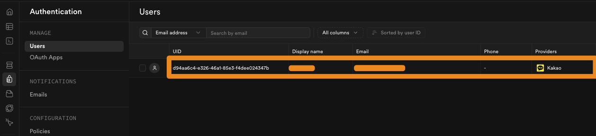

사용자 기능 개발하기
카카오 로그인과 북마크 기능 붙이기
카카오 로그인과 북마크 기능을 구현합니다.
얻어갈 것
- 이미 설정한 Kakao OAuth와 Supabase Auth를 실제 로그인 UI로 연결합니다.
- 북마크 기능을 만들기 위해 스키마, Row Level Security(RLS), UI 변경 범위를 함께 확인합니다.
1. 로그인 UI와 검증
- 앞선 카카오 로그인·Supabase 설정 레슨에서 Kakao OAuth와 Supabase Auth 설정은 끝냈다고 보고 시작합니다.
- 좌측 패널 하단은 로그인 전에는 카카오 로그인 버튼, 로그인 후에는 사용자 정보가 보여야 합니다.
P1카카오 로그인 UI 붙이기
Supabase 카카오 로그인 기능을 붙이려고 한다. 1. 현재 Kakao OAuth와 Supabase 설정까지 마무리한 상태이다. 2. 좌측 패널 하단에 '카카오 로그인' 버튼을 추가해줘. 3. 로그인한 사용자는 같은 위치에서 사용자 정보를 보여줘. 작업 전에 확인해야 할 일이 있으면 먼저 알려줘.
- 구현 뒤에는 브라우저에서 직접 로그인하고, Supabase Dashboard의
Auth에서 새 사용자가 생겼는지 확인합니다.

2. 북마크 기능 범위 잡기
- 장소 상세 패널에는 저장 상태를 바로 바꿀 수 있는 북마크 버튼이 필요합니다.
- 저장 목록은 로그인 영역 하단에 둡니다.
- 북마크 테이블은 로그인한 사용자 id와 장소 id를 함께 저장해야 합니다.
- 사용자별 데이터이므로 RLS 정책도 같이 설계해야 합니다.
P2북마크 기능 변경 범위 잡기
사용자가 장소를 저장할 수 있는 북마크 기능을 추가하려고 한다. 1. 상세 패널에 북마크(하트) 버튼을 추가한다. 2. 사용자가 북마크 리스트를 볼 수 있는 기능을 로그인 버튼 하단에 추가한다. 3. 로그인 안 한 사람이 버튼을 누르면 로그인 알림 모달을 띄운다. 4. 스키마 설계와 RLS까지 함께 고려해야 한다.
마무리
- 이번 챕터에서는 인증과 인가 개념을 이해하고, 카카오 로그인과 Supabase RLS로 기본 인증·인가 환경을 구축했습니다.
- 사용자 전용 유저스토리와 인증 없이 가능한 유저스토리를 구분하고, 그 차이를 데이터베이스 구조와 RLS 정책에도 반영하는 것이 중요합니다.